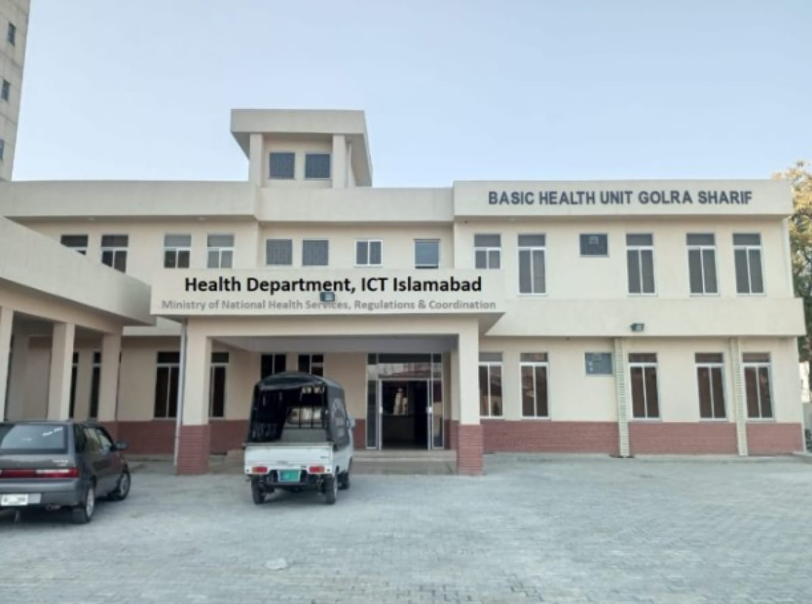

Government hospitals in Pakistan play a crucial role in providing healthcare services to the population. Here is some general information about government hospitals in Pakistan
These are large hospitals equipped with advanced medical facilities, specialized departments, and often associated with medical colleges. They provide highly specialized services and are located in major cities.
These are basic healthcare units in rural areas. They provide essential healthcare services and are staffed by medical officers and paramedics.
BHUs are the smallest healthcare units in Pakistan's rural areas. They focus on preventive and basic healthcare services.
These centers primarily cater to maternal and child healthcare services, including prenatal and postnatal care.
 Government of Pakistan
Government of Pakistan
 Government Services Portal
Government Services Portal